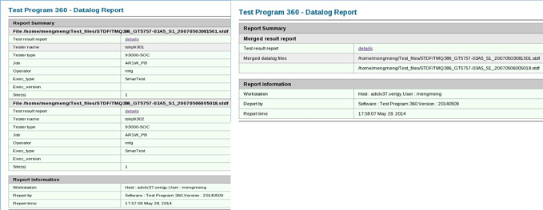
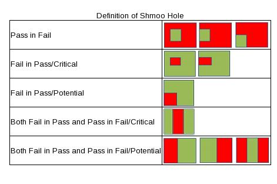
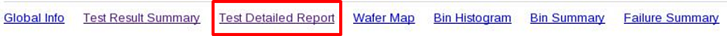
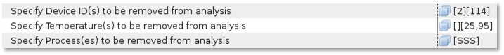
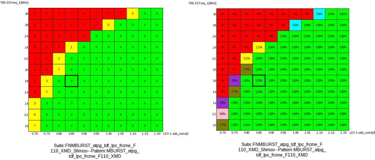

Preference page on Report Datalog Files
Enables you to configure parameters and rule files to generate a specific report.
To customize the data log report, click the  and configure the reference settings.
and configure the reference settings.
Options for processing data log files
Merge test result data if multiple data log files are selected:If you uncheck the box, multiple data log files are reported separately as shown in the left screenshot below. If checked, multiple data log files are merged and reported as shown in the right screenshot below.

Options of shmoo hole types
The report will only list holes of types that are selected, not other types. For example, if you deselect Pass in Fail, the report will not include any holes of the "Pass in Fail" type, even if they occur in the shmoo test.
The report distinguishes these types of holes (green represents pass, red represents fail):
- Pass in Fall
- Fall in Pass/Critical
- Fall in Pass/Potential
- Both Fall in Pass and Pass in Fall/Critical
- Both Fall in Pass and Pass in Fail/Potential
Below is the definition of shmoo hole:

- Shmoo hole is judged only when testmode is pass/fall or p/f): Checking this option to disable shmoo hole judgment unless testmode is set to pass/fall or p/f.
Options of report generation
- Generate test result report for each device/die:
- If you select this checkbox, TP360 generates Test Detailed Report for each device and die. You can see this report in the Test Result Summary tab.
- If you deselect this check box, TP360 will not generate Test Detailed Report for each device and die and the default is to deselect the box.
-

-
Rules for removing data about Device ID(s), Temperature(s) and Process(es) from shmoo report:
- Specify device ID to be removed from analysis: Enter the device ID to not be analyzed in the report.
- Specify temperature to be removed from analysis: Enter the temperature to not be analyzed in the report.
- Specify Process to be removed from analysis: Enter the process to
not be analyzed in the report.
The above three options should work together. Type your entry in brackets "[]". Multiple device IDs (or temperatures, or processes) can be separated by commas. Consecutive device IDs can be indicated by "...". For example, you can use "3...6" to represent "3,4,5,6"; The brackets "[]" which are in the same position of each condition constitute a rule. A empty pairs of brackets must be used if one of the items does not need a specified value.
Example

- Remove the data for device 2 no matter what temperature is in Process SSS from shmoo report .
- Remove the data for device 114 when the temperature is between 25 and 95 from shmoo repo
- All fall shmoo plots to be removed from analysis: If this option is checked, the report shows only passed shmoo plots in overlay. Shmoo lots with all fail, all red will be removed from overlay.
- Show shmoo margin info in report: f you check this option, the margin information X-axis Margin (delta left/ delta hight)and Y-axis Margin (delta below/ delta above) will be displayed in the report.
- Show shmoo holes info in report:If you check this option, the report will display Shmoo Holes indicating whether shmoo holes were found in a shmoo plot (see the diagram below).
- Specify the range for judging somoo holes type:
You can specify the range for judging whether it is a shmoo hole. The range is with in the lenghth of X axis and Y axis. If the hole is in the defined range, then the column Shmoo Holes will display Yes.
-
Specify the number of valid decimal digits in shmoo plots: You can specify the valid decimal digits for the X axis and Y axis in the shmoo plots. The default value is two.
-
Show pass percentage in shmoo overlay plot: If you select this option, the pass percentage will be displayed in the shmoo overly plot.
-
Layout of shmoo plots [<# row> X < # column>]: Type in the format of X axis x Y axis, indicating that the corresponding number cell will be displayed in the shmoo plots in one page. For example, if you type 4x4 and in one page it only displayed 4 colums and 4 rows shmoo plots in one page.

Options for Highlight
The options in this section specify which cells in the report are highlighted in yellow. You can modify the values to change the setting for highlight condition in the test result report:
Functional changes
- Introduced in SmarTest 7.3.2